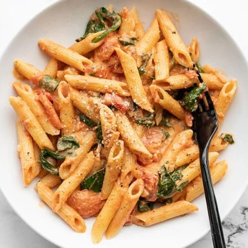

- Steak: Steak is a popular food item that is usually made from beef, although it can also be made from other meats such as pork, lamb, and even fish. The meat is typically cut into thick slices and then cooked on a grill, in a pan, or under a broiler. There are several different types of steak, with varying degrees of tenderness and flavour. Some popular cuts include filet mignon, ribeye, sirloin, and New York strip. The way in which the steak is prepared can also have a significant impact on its flavour, with some people preferring to grill or pan-sear their steak, while others prefer to slow-cook it in an oven or smoker. Steak is a good source of protein, iron, and other important nutrients. However, it is also high in saturated fat and calories, so it should be consumed in moderation as part of a balanced diet.
- Seafood: Seafood refers to any type of edible aquatic animal or plant, including fish, shellfish, and seaweed. It is a popular food choice in many cultures around the world due to its unique taste, nutritional value, and versatility in cooking. Fish is one of the most commonly consumed types of seafood, with popular varieties including salmon, tuna, cod, and halibut. These fish are rich in omega-3 fatty acids, which are beneficial for heart health, as well as protein and other important nutrients. Shellfish, such as shrimp, crab, lobster, and clams, are also popular seafood options. They are high in protein, vitamins, and minerals, but may also contain high levels of cholesterol. It is important to properly cook shellfish to avoid foodborne illness. Seaweed is a type of seafood that is commonly used in Japanese cuisine, and is increasingly being used in other types of cuisine as well. It is a good source of vitamins, minerals, and antioxidants, and is often used in soups, salads, and sushi rolls. Overall, seafood can be a healthy and delicious addition to a balanced diet, as long as it is consumed in moderation and prepared properly.
- Sushi: Sushi is a traditional Japanese dish that consists of small portions of vinegared rice (sushi rice) combined with various other ingredients, such as raw fish, seafood, vegetables, or egg. The ingredients are typically rolled into bite-sized pieces using sheets of seaweed (nori), and may be served with soy sauce, wasabi, and pickled ginger. There are many different types of sushi, each with their own unique flavor and texture. Some popular types include:
- Nigiri: a small ball of sushi rice topped with a slice of raw fish or seafood
- Maki: sushi rolls made with sushi rice and other ingredients rolled inside a sheet of nori
- Temaki: a cone-shaped sushi roll made by wrapping nori around sushi rice and other ingredients
- Sashimi: slices of raw fish or seafood served without rice Sushi is often considered a healthy food option, as it is typically low in fat and high in protein, vitamins, and minerals. However, it is important to consume sushi from reputable sources to ensure the fish is fresh and has been properly handled and prepared.
- Pasta: Pasta is a staple food that originated in Italy and is now enjoyed all over the world. It is typically made from wheat flour and water, and is available in many different shapes and sizes, including spaghetti, linguine, fettuccine, penne, and rigatoni. Pasta can be served in a variety of ways, with many different sauces and accompaniments. Some popular pasta dishes include:
- Spaghetti with marinara sauce: long, thin noodles served with a tomato-based sauce and often topped with Parmesan cheese.
- Fettuccine Alfredo: wide, flat noodles served with a creamy sauce made from butter, cream, and Parmesan cheese.
- Lasagna: layered pasta sheets with meat or vegetables and tomato sauce, topped with cheese and baked in the oven.
- Carbonara: spaghetti served with a sauce made from eggs, cheese, and bacon or pancetta.
-
Desserts: Dessert is a sweet course that is typically served after a meal, although it can also be enjoyed on its own as a snack or treat. Desserts come in many different forms, including cakes, pies, pastries, ice cream, puddings, and fruit-based desserts.
Some popular types of dessert include:

- Chocolate cake: a rich, moist cake made with chocolate and often topped with frosting or ganache.
- Apple pie: a classic American dessert made with a flaky crust and filled with sliced apples and spices.
- Cheesecake: a rich, creamy cake made with cream cheese, eggs, and sugar, often served with a fruit topping or caramel sauce.
- Ice cream: a frozen dessert made from milk, cream, sugar, and flavorings, such as vanilla, chocolate, or fruit.
-
Champagne: Champagne is a sparkling wine that is produced in the Champagne region of France. It is made using specific grape varieties, including Pinot Noir, Pinot Meunier, and Chardonnay, and undergoes a secondary fermentation process in the bottle to create its characteristic bubbles. Champagne is often associated with celebrations and special occasions, and is often served as an aperitif before a meal or as a toast during a celebration. It is also used in cocktails, such as the classic Champagne cocktail, which combines Champagne with sugar, bitters, and a twist of lemon.
There are many different styles of Champagne, including:
- Brut: a dry Champagne with minimal sweetness
- Extra Brut: a very dry Champagne with no added sugar
- Demi-sec: a sweeter Champagne with more residual sugar
- Rosé: a Champagne made with red grapes, giving it a pink color and a fruity flavor
-
Dim sum: Dim sum is a type of Cantonese cuisine that originated in Southern China and is now enjoyed all over the world. It consists of small, bite-sized portions of food that are served in steamer baskets or on small plates, often accompanied by tea. Dim sum dishes are typically served in the morning or early afternoon as a brunch or lunch.
Some popular dim sum dishes include:
- Siu mai: small steamed dumplings filled with pork and shrimp.
- Har gow: shrimp dumplings wrapped in a translucent rice flour skin.
- Char siu bao: steamed buns filled with barbecued pork.
- Cheong fun: steamed rice noodle rolls filled with shrimp or pork.
- Egg tarts: small pastry cups filled with sweet custard.

These are just a few examples of the types of delicious food you might find at a five-star hotel. Keep in mind that menus can vary widely depending on the hotel and its location, so be sure to check out the dining options before you book your stay.